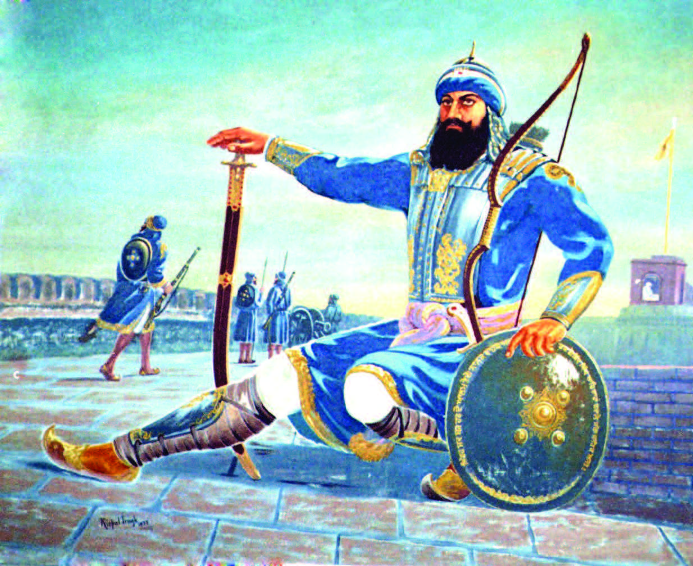
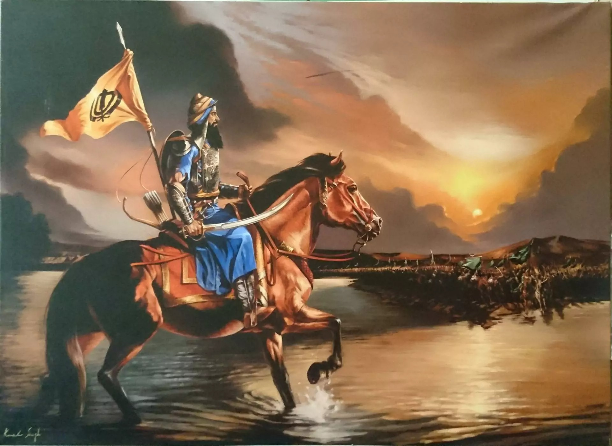

Who Was Baba Banda Singh Bahadur?
Baba Banda Singh Bahadur (1670–1716) was a fearless Sikh general and the first leader to establish Sikh rule in Punjab by defeating the Mughal Empire. He remains one of the most iconic warriors and martyrs in Sikh history.

Early Life-Baba Banda Singh Ji
Born as Lachman Dev in Rajouri (present-day Jammu and Kashmir), he became a Hindu ascetic before transforming into a warrior saint after meeting Guru Gobind Singh Ji at Nanded in 1708. Guru Ji renamed him Banda Singh Bahadur and gave him the mission to fight oppression in Punjab.
Mission from Guru Gobind Singh Ji
Guru Gobind Singh Ji gave Banda Singh five arrows, a Nishan Sahib, a sword, and a Hukamnama, appointing him as the commander of the Khalsa forces to punish the Mughal tyrants, especially Wazir Khan of Sirhind, responsible for the martyrdom of the Sahibzaade.
Military Campaign & Victories
In 1709, Banda Singh led a campaign of justice. The Khalsa army marched through Samana, Shahabad, and eventually Sirhind, defeating Wazir Khan in the Battle of Chappar Chiri in 1710. This was a turning point in Sikh history.
He established Khalsa Raj by abolishing Zamindari system and distributing land to farmers. He introduced the first Sikh administrative system and minted coins in the name of Guru Nanak and Guru Gobind Singh Ji.

Challenges and Final Stand-Baba Banda Singh Ji
The Mughals saw Banda Singh as a threat and launched multiple campaigns against him. Eventually, he was besieged at Gurdas Nangal in 1715 and captured after months of resistance.
Martyrdom-Baba Banda Singh Ji
In June 1716, Banda Singh Bahadur, along with over 700 Sikhs, was martyred in Delhi. He endured horrific torture but never gave up his faith or begged for mercy. His martyrdom inspired future generations of Sikhs to resist tyranny with courage.

Connection to the Ten Sikh Gurus
- Guru Nanak Dev Ji: Embodied the principles of equality and justice
- Guru Angad to Guru Tegh Bahadur Ji: Followed their legacy of service and sacrifice
- Guru Gobind Singh Ji: Personally blessed him and gave him leadership of the Khalsa army
Legacy
Baba Banda Singh Bahadur is remembered as the first Sikh to challenge the Mughal Empire successfully and establish a sovereign Sikh rule. His rule was short-lived, but it sowed the seeds for future Sikh Misls and ultimately the Khalsa Empire under Maharaja Ranjit Singh.
Back